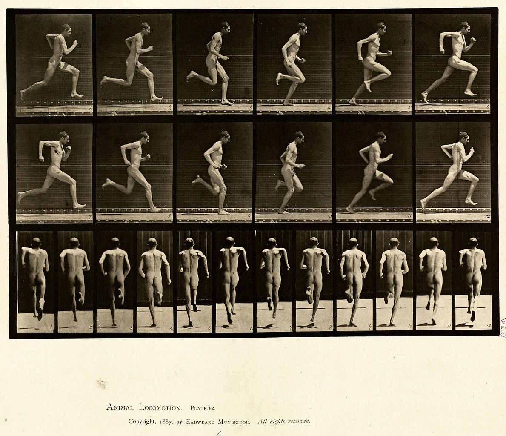
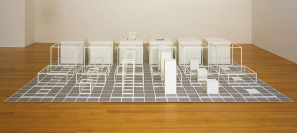
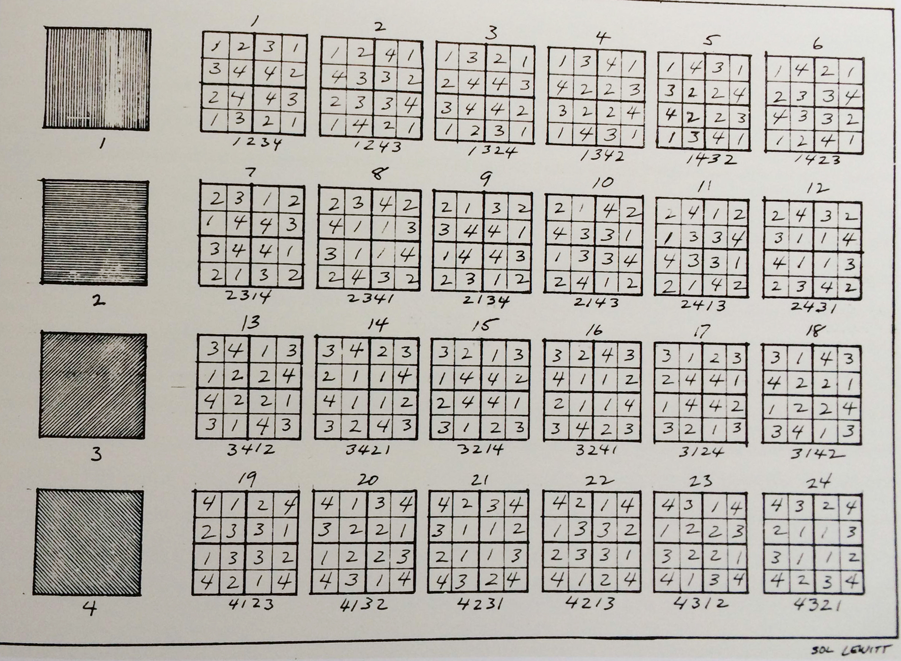
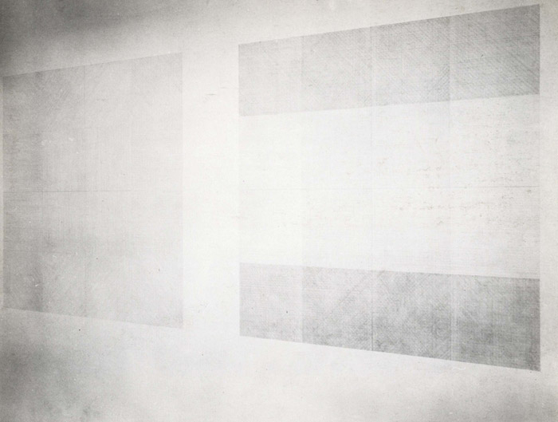
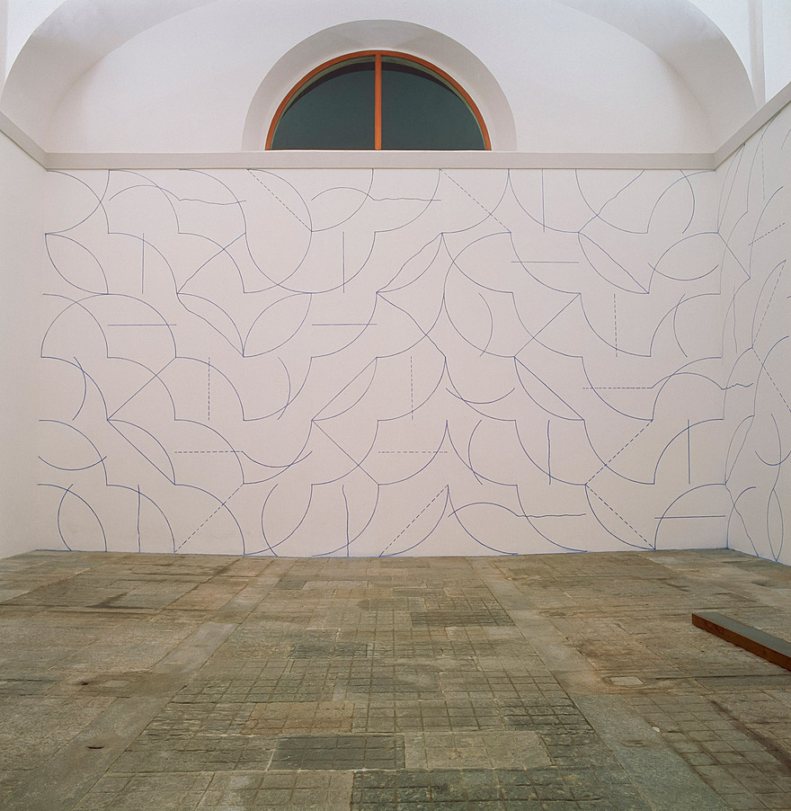
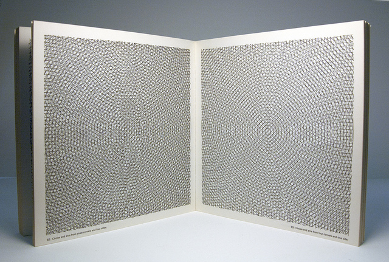
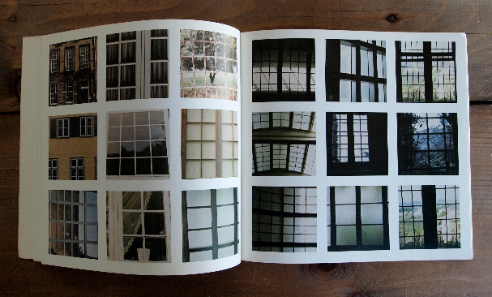

Grids dominate the vast and varied oeuvre of Sol LeWitt, one of the leading practitioners of the Conceptual art movement that emerged in the 1960s. Rejecting the subjectivity and formalism of Abstract Expressionist painting, Conceptual artists sought to divorce art from palpable materiality and commodification in favor of intangible concepts and ideas. As LeWitt declared in his definitive “Paragraphs on Conceptual Art” in 1967, “The idea becomes a machine that makes the art.”1 According to Christina Olsen, the grid’s “simplicity and logic offered a structure through which precise, serial variations could be relentlessly played out,”2 acting as a generative matrix for much of LeWitt’s work. Its possibilities for seemingly endless permutations may explain why LeWitt remained fascinated with the grid for nearly five decades, until his death in 2007.
LeWitt’s interest in the grid began with encountering, in late 1950s, Eadweard Muybridge’s book The Human Figure in Motion, which charted the minute progression of human movement through thousands of photographs, all laid out in grid format. In the early 1960s, LeWitt began experimenting with grid-based paintings like Run IV, which depicts the figure of a running man in the format of a 3x6 grid on three discrete layers of support. In 1964, LeWitt abandoned canvas altogether with his Wall Grid, which is simply a black, 9x9 modular wooden structure. Both the wooden support and the shadows it casts are essential to defining the work; as the artist Dan Graham put it, it is a “structure that is no longer the structure of something.”3 Wall Grid was the first of many skeleton-like, modular structures of varying scale and complexity that LeWitt would make over his lifetime.
In 1966, LeWitt made what Charles W. Haxthausen called a “decisive breakthrough”4 with Serial Project #1 (ABCD), made of four sets of nine modular pieces arranged on a gridded, 3x3 base. Each piece has a smaller piece nested within it, and the four sets contain a combination of open and closed forms. In an article about the work in Aspen magazine, LeWitt explained, “Serial compositions are multipart pieces with regulated changes. The differences between the parts are the subject of the composition. If some parts remain constant it is to punctuate the changes…The grid equalizes the spacing and makes all of the spaces and pieces of equal importance.”5 The grid, then, eliminates visual hierarchy, highlighting variation among equal units and dissolving traditional distinctions between figure and ground, as well as between support and work of art—as was the case with LeWitt’s Wall Grid. As LeWitt remarked in 1969, the grid is “just a way I think, of making some sort of order, but making a kind of order where everything is equal, nothing is superior and nothing is inferior.”6
In 1968, LeWitt completed his Drawing Series, which was based on a system of 24 permutations of 4x4 grids made by rotating different combinations of straight lines in four directions, with the requirement that the corners and center of each 4x4 grid had to be identical. LeWitt then elaborated the system using different methods of change and rotation, yielding a total of 192 permutations. LeWitt described his modus operandi as “making an initial choice of a system, and letting the system do the work”7: once the rules were set in place, the work would generate itself until all possible permutations had been exhausted.
LeWitt’s Drawing Series became the basis for his first wall drawing, shown at the Paula Cooper Gallery in 1968, followed by another one a month later at the Ace Gallery in Los Angeles. Both drawings adhered to a strict set of guidelines, resulting in multiple 4x4 grids containing various combinations of lines in four directions, which would become LeWitt’s signature motif or “coat of arms”8.
According to a number of art historians, LeWitt’s wall drawings—he created more than 1,200 over the course of his lifetime—represent a radical break in the long tradition of drawing. By being applied directly onto the wall—eliminating paper altogether—they take on the surface irregularities of the wall, making them integral to the character of the drawing, and collapsing all physical boundaries between the viewer and the artwork. In other words, as Briony Fer put it, they detach “what could come to be seen as pictorial function from its immutable connection to the kind of thing a picture conventionally is, that is, something hanging on a wall.”9
LeWitt’s wall drawings are serial compositions made of recurring shapes, lines, or colors that play out over a modular grid according to a set of instructions conceived by the artist. Significantly, they are first expressed in language: they are titled according to their descriptive properties, and can consequently be executed using traditional drawing techniques. For example, Wall Drawing #26 is entitled, “A one-inch grid covering a 36” square. Within each one-inch square, there is a line in one of the four directions.” The grid does not have to be overtly visible in order to be present, such as in Wall Drawing #146, entitled “All two-part combinations of blue arcs from corners and sides, and blue straight, not straight and broken lines,” in which all possible permutations of arcs and lines are arranged in grid format.
According to Jan Debbaut, the wall drawings give “new and radical shape to the traditional distinction between invention and execution…[uncoupling] the Idea from the material realization by conceptualizing it in another medium (language) which differs essentially from that used for its embodiment in a drawing.”10 This dematerialization means that LeWitt’s drawings can be executed by anyone, anywhere, without losing their authenticity: unconstrained by time and space; they continue to be recreated after his death, in a variety of different settings. As LeWitt stated in “Paragraphs on Conceptual Art,” once the idea has been conceived, “execution is perfunctory affair.”11 Each execution of a drawing is a new “performance” that is distinct from prior iterations and “insists on is singularity.”12. Robert Rosenblum pointed out that LeWitt’s wall drawings “merge antithetical systems of order and anti-order”13: although based on simple, predetermined rules, the actual results are unpredictable and sometimes even surprising.
This tension between order and anti-order is made possible by the grid: although it may seem monotonous and inert, it serves as "fruitful foil for change and motion through [its] seriality…[reiterating] its flatness and neutrality just as the events within it enact their own variability”14. In other words, the grid provides a static framework for dynamic, serial variation, or what Lucy Lippard referred to as “continuous regeneration—the activity of permutation, rotation, mirroring, reversals and cross reversals, juxtaposition and superimposition”15. Lippard noted that energy is buried in the “neutral form”—the grid—and “activated by the idea”16; that is, LeWitt’s prescriptions. The grid provides an underlying structure or system through which visual narratives can be enacted: as LeWitt himself explained, “in the resulting inertia of a neutral field, sequence becomes most important,” and variation “would be read by the viewer in a linear manner”17. Thus, much like Muybridge’s gridded photographic studies of movement, LeWitt’s grids facilitate the serial progression of pre-determined visual forms.
LeWitt’s obsession with the grid extended beyond modular structures and wall drawings to other mediums as well, including prints, photographs, and artist’s books. LeWitt produced a number of books over his lifetime, as he liked their affordability and accessibility to a wider audience. In 1972, he published the book Arcs, from corners & sides, circles, & grids and all their combinations, which comprises 195 unique permutations of the three forms arranged in increasing complexity. Several years later, in 1977, LeWitt published Color Grids, which displayed “all vertical and horizontal combinations of black, yellow, red and blue straight, non-straight and broken lines.”18 When up to two colors are combined in single drawing, the scheme yields a total of 78 drawings.
LeWitt also tried to find some semblance of serial variation in the external world, publishing several books composed of photographs arranged in 3x3 grids. In his 1977 book PhotoGrids, LeWitt published over 400 photographs of found grids from his travels around the world, including everything from doors and windows to fencing, grating, and manholes. As photos of grids themselves laid out in grids, they function as a visual meta-exploration of the grid’s organizing principles as applied in everyday life. A few years later, in 1980, LeWitt turned his photographic explorations onto himself in Autobiography, a 128-page book composed entirely of 1,101 photographs of the New York loft in which LeWitt lived and worked, all arranged in a 3x3 grid. The photographs span everything from the commonplace, such as floorboards and clocks, to the personal, such as handwritten messages and family members. Unlike the rest of his work, Autobiography is deeply subjective and rooted in both reality and the world at large. Bringing order to the messiness of LeWitt’s studio and everyday life, it epitomizes the extent to which LeWitt viewed the world through the grid’s organizing logic, in which ideas took precedence over physicality.